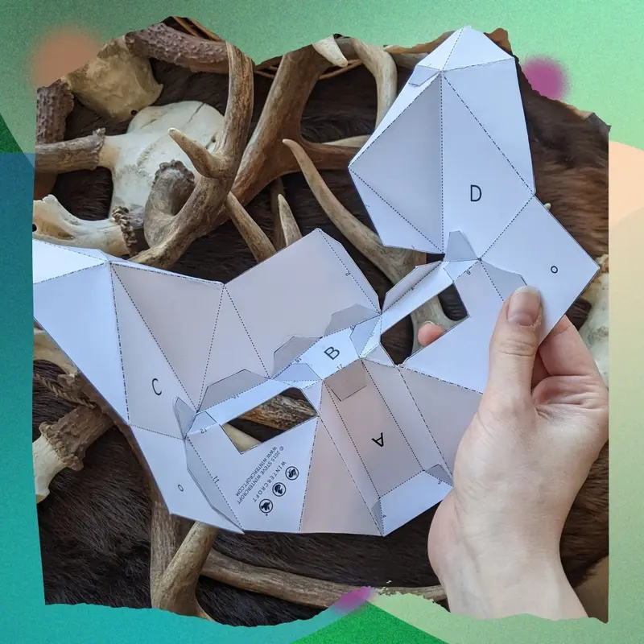
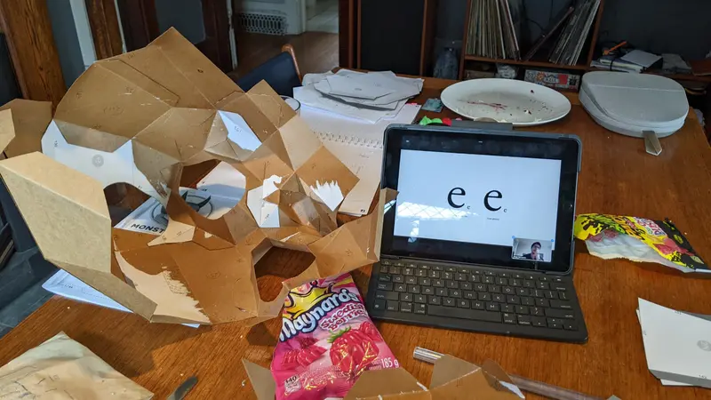
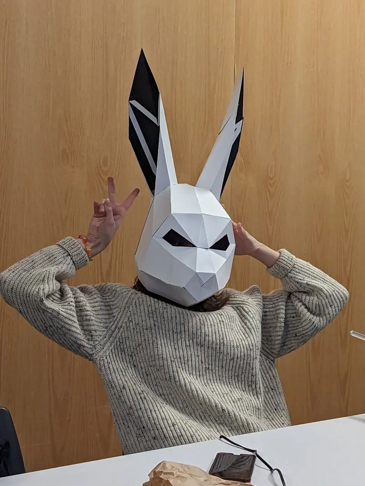
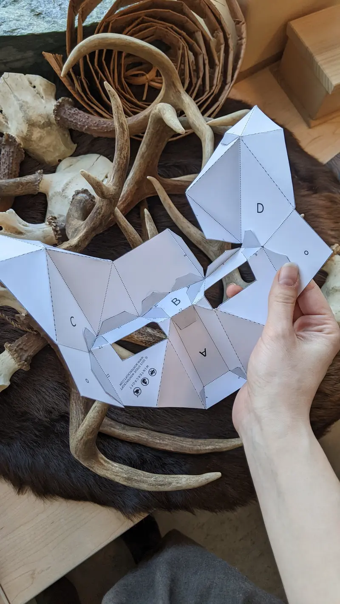
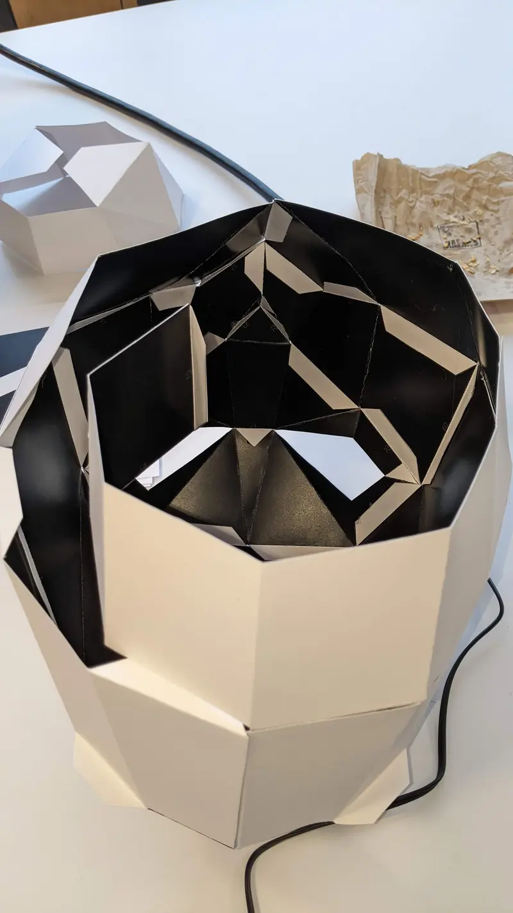

Embodied Storyboarding
I designed and facilitated an embodied storytelling workshop for ECUAD animation students to explore a simple question: what changes when storyboarding begins in the body, not the head?
- Format
- One afternoon, group-based
- Participants
- Animation students, Emily Carr University
- Methods
- Movement and improv, mask work, puppetry, music, quiet reflection, rapid storyboarding
- Outcome
- Short storyboards drawn after physically exploring story, character and setting

Context
Rather than starting with composition, camera angles or efficiency, we began with movement, sensation and shared presence. The goal was not performance. It was aliveness.
At the centre of the workshop is a belief that Cree storytelling principles are relational, not exclusive. When approached with care and context, they can inform how anyone engages story. Indigenous art-making is not only for Indigenous people. It is a way of working that values responsibility, humour, place and participation. Participants weren’t asked to reproduce Indigenous form; they were invited into relational practice, to respond, interpret and embody story in their own way.
Stories are not static “myths” of the past. They live in the present moment.One of the teachings that shaped the workshop, from an interview with Ronnie Sinclair, Knowledge Keeper and pipe carrier
Teachings that guided the structure
- Stories live in the present moment.
- Storytelling deepens relationship: to land, to living beings, to each other.
- Humour invites participation.
- Creating or finding an intentional location for story-sharing matters.
These principles informed how I designed the space, facilitated participation and held room for silence and ensemble experience.
Why embodied storytelling
Storyboarding in animation is iterative, collaborative and essential: “making the film without making the film.” But it is also typically head-driven. Animators often spend hours seated, drawing from established methods, with few opportunities in studio training to explore stories physically as a group.
Embodied practices, explored in somatic psychology and theatre training, treat cognition and sensation as integrated. I wanted to see whether animators could infuse their worldview into their boards more intuitively if they physically explored story first, and whether that experience would linger beyond the workshop itself.



Workshop structure
- Movement and activationGuided movement, improv prompts and music to energize and lower inhibition.
- Mask workWith hand-constructed masks (rabbit, fox, moose, Trickster and others), participants explored gait, breath, posture and emotional states: walking as if holding a secret, discovering a feast or moving through an unfamiliar forest.
- PuppetryDrawing on breath, focus and weight, participants brought simple puppets to life. The puppet’s neutrality allowed emotion without embarrassment or judgment.
- StoryboardingAfter hours of physically experiencing the story, participants had seven minutes to draw a storyboard, with music and lighting curated to hold the atmosphere. The boards were loose, intuitive and shaped by each person’s embodied experience.
A questionnaire the following day explored residual emotional and physical effects.
Inside the workshop. Watch the story reading and participants’ storyboards on YouTube ↗
The story
Participants explored a Trickster story centred on Wesakechak, an amalgamated telling I drew from Tomson Highway’s Laughing with the Trickster, Joyce Clouston’s writing on Stan McKay and Wilfred Buck’s teachings on Cree and Anishinaabe constellations.
In this telling, the animals approach Wesakechak during a harsh winter, asking for warmer coats. Wesakechak confidently agrees. The rabbit turns white; the fox grows a thick undercoat. The moose, distracted while crossing a pond and stopping to eat, arrives late. Only one oversized coat remains. He takes it, and it hangs loose around his shoulders and neck.
The story carries humour, consequence and transformation, and invites embodiment through posture, weight, cold, timing and delay.


What I learned
- Curating an environment for playful exploration is as important as the activities themselves.
- To support intuitive boards, participants need encouragement to stick with their own way of seeing rather than revert to habitual methods.
- Empathy and attentiveness are essential when facilitating embodied work.
- There is a symbiotic relationship between physical processing and introspection. Embodied storytelling may need longer periods of rest, and silence is productive in high-energy environments.
- Interaction between participants significantly shapes storytelling capacity.
- Next time: test a low-fidelity version before scaling, rebalance the time spent making masks against using them and seek support earlier in planning and recruitment.
This approach doesn’t replace traditional storyboarding; it supplements it, strengthening ensemble understanding before production silos form and creating embodied memory that can shape pacing, posture and spatial composition. I’m continuing to develop it as a method for studios, youth programs and collaborative storytelling environments.